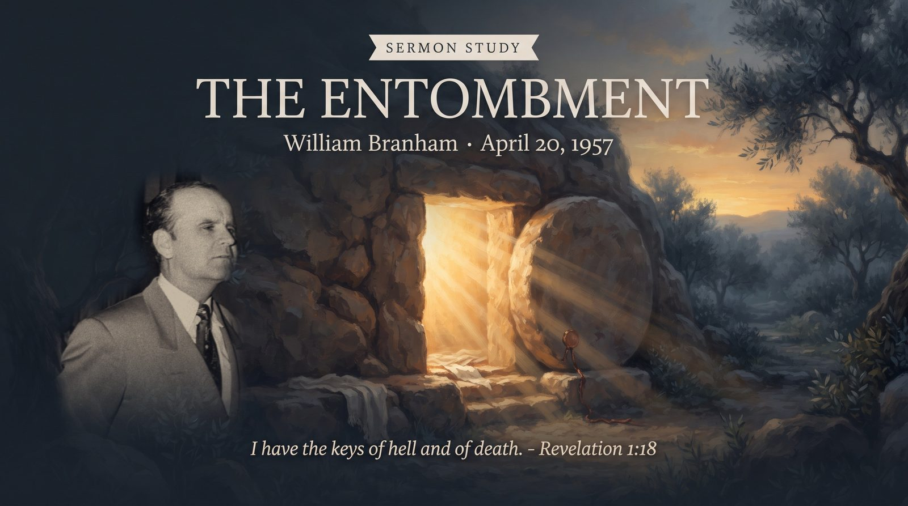

William Branham · April 20, 1957 · Branham Tabernacle, Jeffersonville, Indiana
♫ Listen to or read the full sermon at Voice Of God Recordings →

This message was preached on the Saturday of the Easter Revival, the quiet day sitting between the Good Friday hour of the Perfection sermon and the Sunday morning when the tomb would be found empty. It's an odd day to build a service around. Nothing visibly happens on the Saturday of that first Holy Week. The body is in the tomb, the disciples are scattered, and by every outward appearance the story has simply stopped. Brother Branham's argument is that nothing could be further from the truth, that the most decisive things that ever happened, happened on that silent Saturday, and none of it was visible to anyone standing outside the tomb.
The center of the message is a simple refusal to picture Christ's body in the tomb as the whole story of where He was. Brother Branham draws a hard line between the body, laid in Joseph of Arimathea's tomb, and the rest of who Christ was, which he insists was anything but still. In his reading, the three days and three nights were not an interruption in Christ's work but a continuation of it in a different arena, carried out where no human eye could follow.
To make the case, he turns to a string of Old Testament men who made deliberate choices about where they would be buried, and argues those choices weren't sentiment but faith. Job's confidence that his Redeemer lived and would stand at the latter day upon the earth. Abraham's insistence on purchasing a burial cave at Machpelah rather than being buried in Egypt or Mesopotamia. Isaac and Jacob following the same pattern, choosing the same ground. Most pointed of all is Joseph, dying in Egypt but making the children of Israel swear an oath that when God visited them, they would carry his bones back up out of Egypt and bury them in the land of promise. Brother Branham reads all of this as men who believed the resurrection was a real, physical, future event, tied to a real, physical piece of ground, and who arranged their own deaths around that belief centuries before it happened.
He brings in Noah as a companion example, not about burial but about the same underlying kind of faith, believing God's word and building toward a future no circumstance around him supported. There was no rain, no flood, no visible reason to build an ark, only a word from God. Brother Branham's point in placing Noah alongside Job and Abraham is that the faith which chooses a burial plot for a resurrection not yet seen, and the faith which builds a boat for a flood not yet seen, are the same faith. Scripture speaks, and the believer arranges his life, and even his death, around what it says, regardless of what the moment in front of him looks like.
From there the sermon moves to what Christ was actually doing during those three days. Rather than a body simply waiting in a grave, Brother Branham describes a Savior descending to paradise, the place where the Old Testament righteous had been kept, and going further still into the domain Satan had held since the Fall to wrest away, in the language of Revelation 1:18, the keys of death and hell. It's a picture of confrontation and conquest rather than rest, an active undoing of the very thing the tomb seemed, on the surface, to represent.
He points to a detail in Matthew 27 that is easy to read past: at the moment of the resurrection, graves were opened and many bodies of Old Testament saints rose and appeared to many in Jerusalem. Brother Branham treats this as more than a strange footnote. He reads it as the first visible proof, before the empty tomb was even discovered, that whatever Christ had done in the unseen part of those three days had already reached backward and touched people who had been dead for centuries. The tomb being found empty on Sunday morning wasn't the beginning of the resurrection's effect. It was the confirmation of something that had already started.
Preaching on the entombment itself, rather than moving straight from the cross to the empty tomb, forces a congregation to sit inside the part of the story that looks, from the outside, like defeat. Brother Branham's whole case is that the look of a thing and the truth of a thing aren't always the same, and that the day which seemed to prove death's final word was, underneath, the day death lost its claim. He closes the message the way he closes most of these Easter services, with a direct call to accept Christ, whether for the first time, after a season of backsliding, or for the sake of a family not yet right with God, reminding the congregation that death makes no distinction of person, age, or ability, and that the same certainty that carried Job and Abraham to their graves is available to anyone willing to take God at His word today.
Source: The Entombment, preached April 20, 1957. Text © Voice Of God Recordings. This study reflects my own understanding of the message as a believer, not a verbatim reproduction of the sermon.
← Back to Sermon Studies